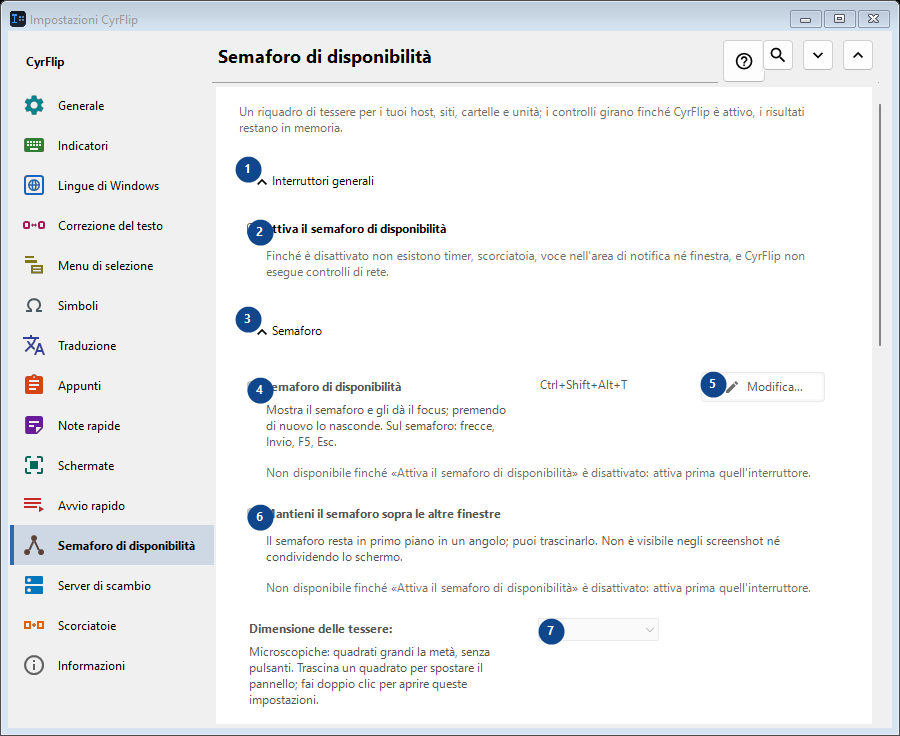
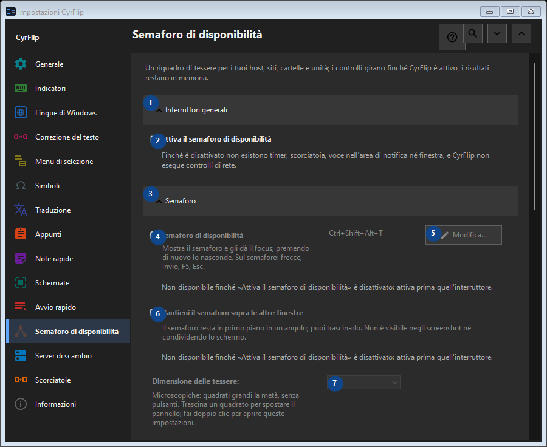

Semaforo di disponibilità
A cosa serve
Un riquadro di tessere per i tuoi host, siti, cartelle e unità; i controlli girano finché CyrFlip è attivo, i risultati restano in memoria.


Ordine delle operazioni
Le impostazioni si applicano subito. Non serve un ordine preciso; usa i gruppi qui sotto.
Elementi
1. Interruttori generali
Usa questo comando per l’azione indicata. Leggi ogni richiesta di conferma prima di accettare.
Le tue scorciatoie2. Attiva il semaforo di disponibilità
Finché è disattivato non esistono timer, scorciatoia, voce nell'area di notifica né finestra, e CyrFlip non esegue controlli di rete.
Le tue scorciatoie3. Semaforo
Usa questo comando per l’azione indicata. Leggi ogni richiesta di conferma prima di accettare.
Le tue scorciatoie4. Semaforo di disponibilità
Non disponibile finché «Attiva il semaforo di disponibilità» è disattivato: attiva prima quell'interruttore. Questo elemento non è disponibile. Attiva prima la funzione o seleziona una voce.
Le tue scorciatoie5. Modifica - Semaforo di disponibilità
Non disponibile finché «Attiva il semaforo di disponibilità» è disattivato: attiva prima quell'interruttore. Questo elemento non è disponibile. Attiva prima la funzione o seleziona una voce.
Le tue scorciatoie6. Mantieni il semaforo sopra le altre finestre
Non disponibile finché «Attiva il semaforo di disponibilità» è disattivato: attiva prima quell'interruttore. Questo elemento non è disponibile. Attiva prima la funzione o seleziona una voce.
Le tue scorciatoie7. Dimensione delle tessere
Non disponibile finché «Attiva il semaforo di disponibilità» è disattivato: attiva prima quell'interruttore. Questo elemento non è disponibile. Attiva prima la funzione o seleziona una voce.
Le tue scorciatoie8. Colonne
Non disponibile finché «Attiva il semaforo di disponibilità» è disattivato: attiva prima quell'interruttore. Questo elemento non è disponibile. Attiva prima la funzione o seleziona una voce.
Le tue scorciatoie9. Non disponibile finché «Attiva il semaforo di disponibilità» è disattivato: attiva prima quell'interruttore.
Scegli o inserisci il valore indicato dall’etichetta vicina. Controllalo prima di continuare. Questo elemento non è disponibile. Attiva prima la funzione o seleziona una voce.
Le tue scorciatoie10. Trasparenza della finestra del semaforo
Non disponibile finché «Attiva il semaforo di disponibilità» è disattivato: attiva prima quell'interruttore. Questo elemento non è disponibile. Attiva prima la funzione o seleziona una voce.
Le tue scorciatoie11. Mostra il semaforo
Non disponibile finché «Attiva il semaforo di disponibilità» è disattivato: attiva prima quell'interruttore. Questo elemento non è disponibile. Attiva prima la funzione o seleziona una voce.
Le tue scorciatoie12. Obiettivi
Usa questo comando per l’azione indicata. Leggi ogni richiesta di conferma prima di accettare.
Le tue scorciatoie13. Indirizzo
Non disponibile finché «Attiva il semaforo di disponibilità» è disattivato: attiva prima quell'interruttore. Questo elemento non è disponibile. Attiva prima la funzione o seleziona una voce.
Le tue scorciatoie14. Aggiungi
Non disponibile finché «Attiva il semaforo di disponibilità» è disattivato: attiva prima quell'interruttore. Questo elemento non è disponibile. Attiva prima la funzione o seleziona una voce.
Le tue scorciatoie15. Dettagli...
Non disponibile finché «Attiva il semaforo di disponibilità» è disattivato: attiva prima quell'interruttore. Questo elemento non è disponibile. Attiva prima la funzione o seleziona una voce.
Le tue scorciatoie16. Controlla tutto ora
Non disponibile finché «Attiva il semaforo di disponibilità» è disattivato: attiva prima quell'interruttore. Questo elemento non è disponibile. Attiva prima la funzione o seleziona una voce.
Le tue scorciatoie17. Cronologia delle modifiche
Usa questo comando per l’azione indicata. Leggi ogni richiesta di conferma prima di accettare.
Le tue scorciatoie18. Apri il file della cronologia
Non disponibile finché «Attiva il semaforo di disponibilità» è disattivato: attiva prima quell'interruttore. Questo elemento non è disponibile. Attiva prima la funzione o seleziona una voce.
Le tue scorciatoie19. Mostra nella cartella
Non disponibile finché «Attiva il semaforo di disponibilità» è disattivato: attiva prima quell'interruttore. Questo elemento non è disponibile. Attiva prima la funzione o seleziona una voce.
Le tue scorciatoie20. Cancella la cronologia...
Non disponibile finché «Attiva il semaforo di disponibilità» è disattivato: attiva prima quell'interruttore. Questo elemento non è disponibile. Attiva prima la funzione o seleziona una voce.
Le tue scorciatoie